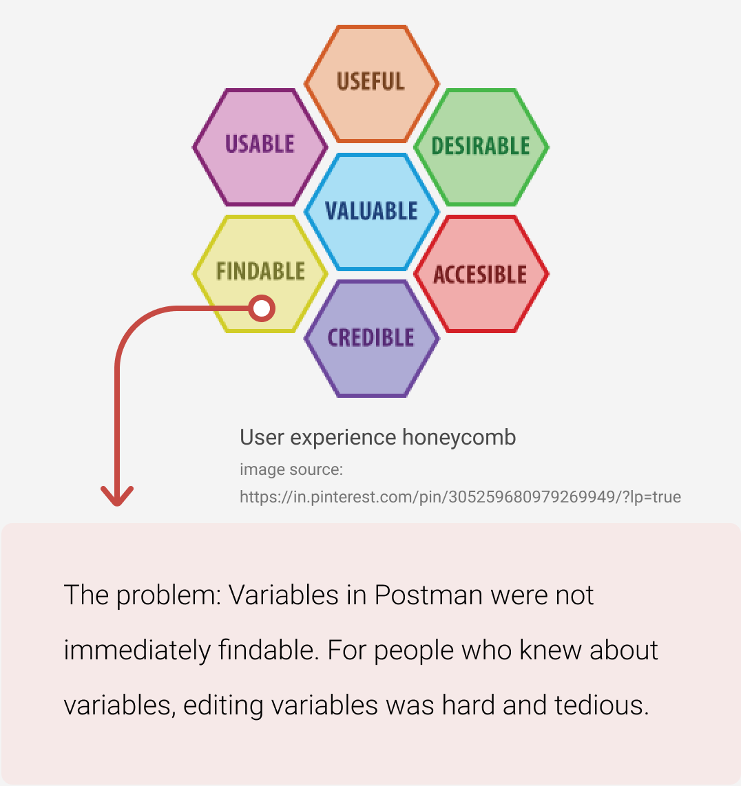
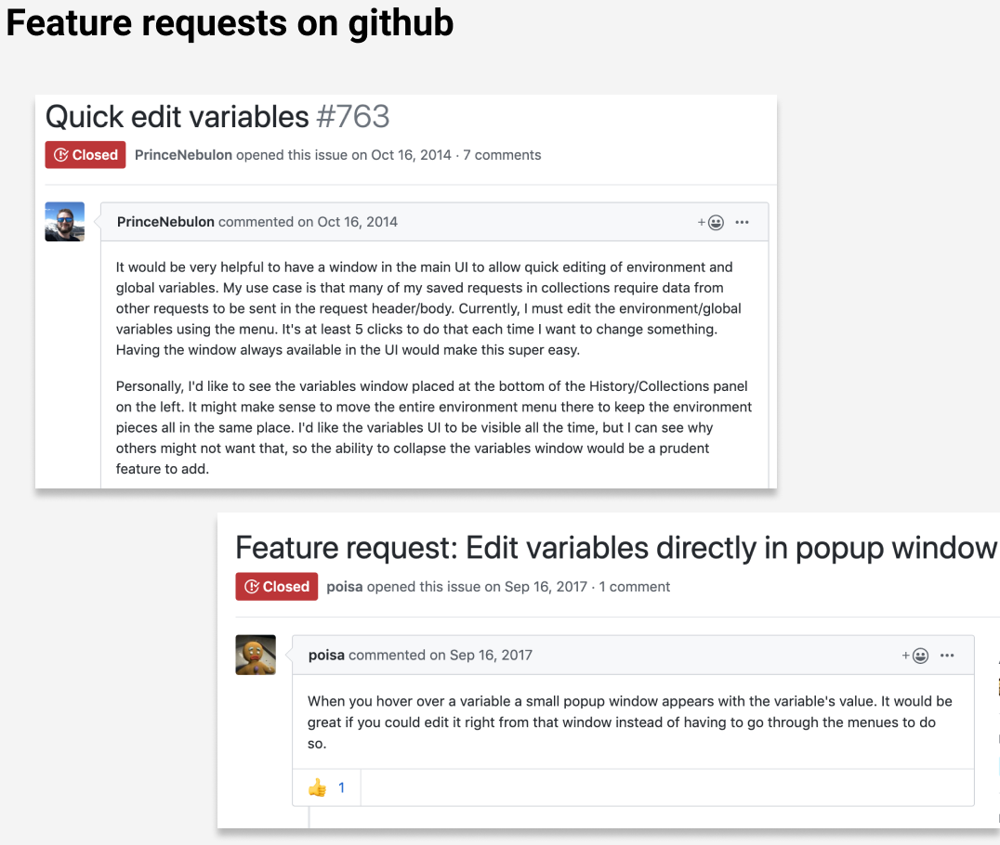
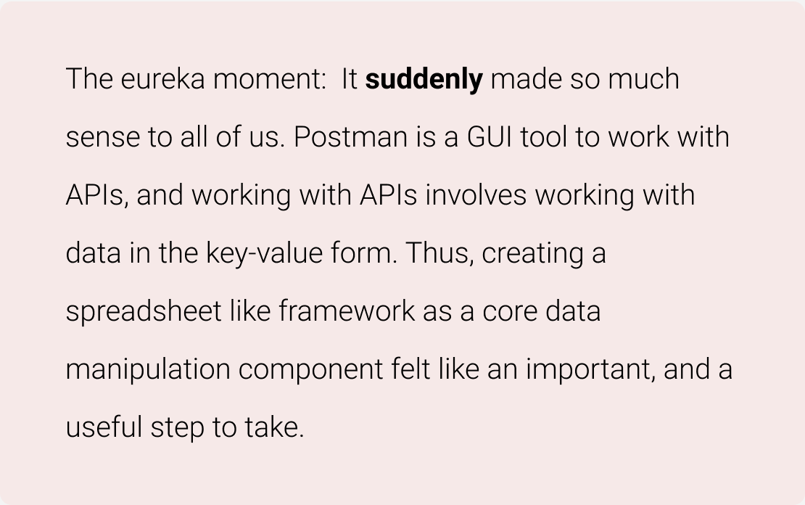
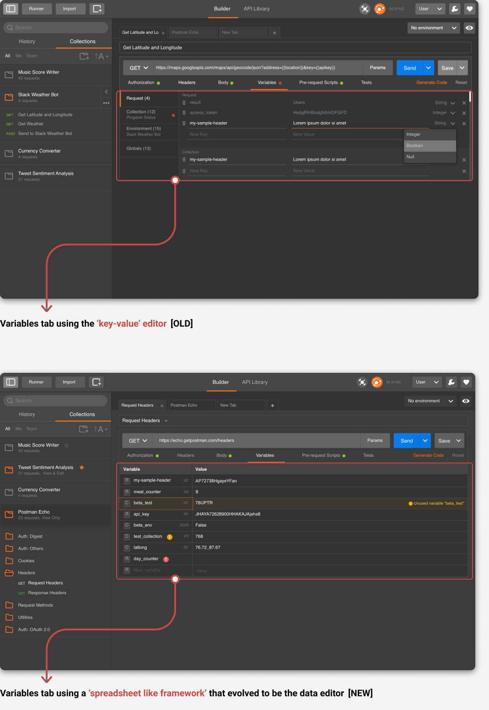
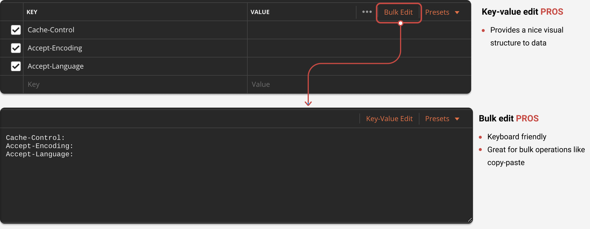
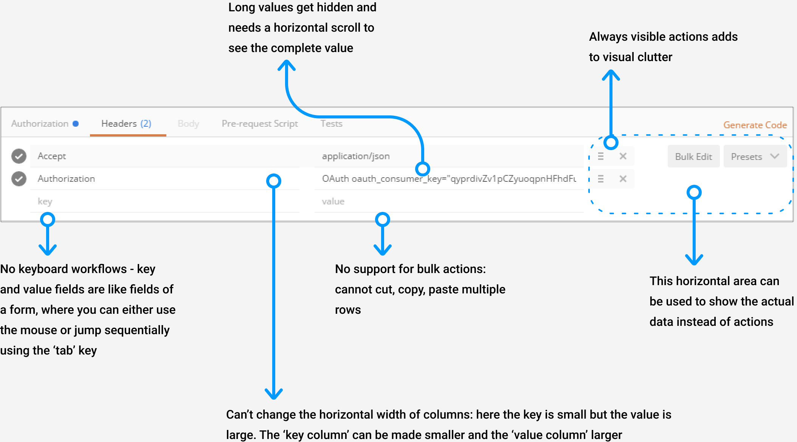
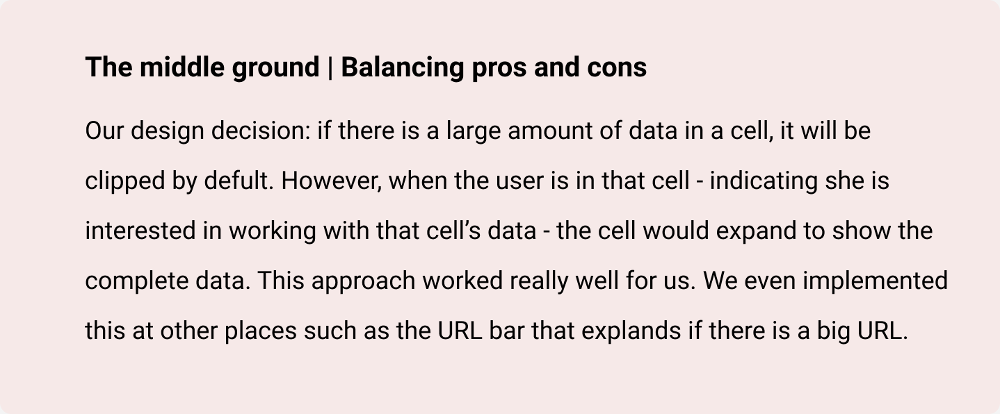
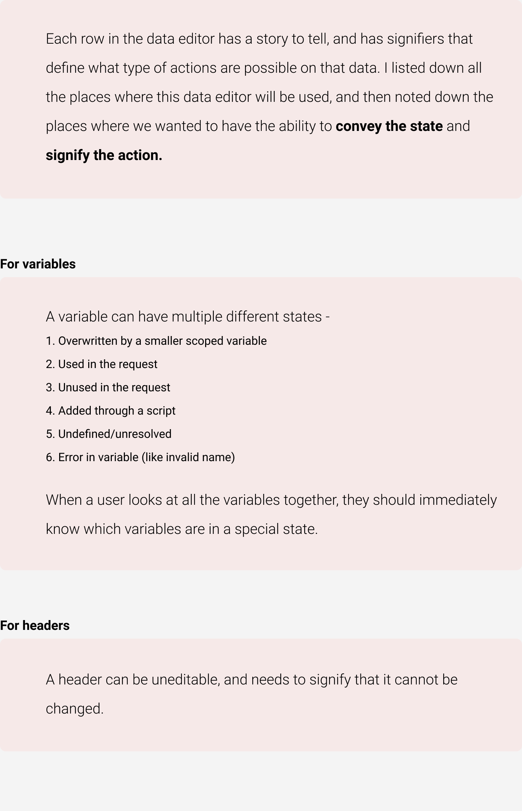
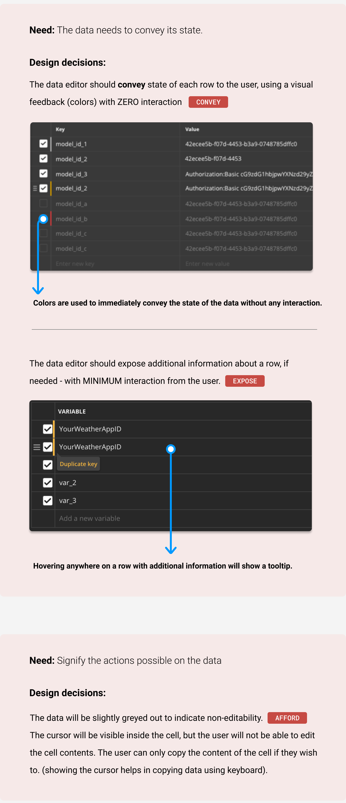

Conceptualisation started: November 2016
Component shipped: February 2017
Overview
Background
Postman
is the only complete API development environment. It is a desktop application that provides a Graphical User Interface to work with APIs and is used by millions of developers around the world.
Working with APIs involves working with data that is in the form of key : value pairs. For example, the query parameters that are part of the API, the headers that are sent with the request, the variables used in the request, the JSON response that is received, and so on.
What is the data editor?
The data editor is an improvement over the basic ‘key-value’ editor that was being used to work with data in Postman. Before the data editor was born, the Postman app had a basic key-value editor where the key and value fields were like fields of a form. The only way to navigate between the keys and values was by using the 'tab' key, similar to how you'd navigate to fill out a form. There was a separate 'Bulk edit' mode which was used to navigate through the keys and values quickly using the keyboard shortcuts and perform bulk copy-paste actions.
This key-value editor was being used at a lot of places in the Postman app since its inception, for example editing variables or request params. Our users were happy with it and we did not receive any feature requests around changing it.
My role
Responsibilities
As the only designer working on this feature, my responsibilities included:
- Understanding the product and the underlying needs of the users
- Ideation, wireframing and high fidelity mocks: creating high-fidelity mocks and prototypes for the final solution
- Working closely with engineers to ensure high-quality implementation.
- Consolidating user feedback received via various channels (Slack, Twitter, Github etc.), and using it to push further improvements to the feature
- Wrote documentation and a blog post on the Postman blog.
How it started
The interesting part
The most interesting thing about this project is that it did NOT start with a project specification or a brief aimed at improving the key-value editor. We were not thinking of changing our key-value editor. There was no problem we had set to solve. No one even identified 'manipulating data in Postman' as a problem.
The 'visible' problem
I was working on a project aimed at streamlining the concept of variables in Postman. Postman has variables with different scopes and it is a very powerful feature, but a lot of people didn't know about variables. For people who did, performing CRUD (Create, Read, Update, Delete) operations on variables was hard and tedious. Editing variables was hard since it required a lot of clicks.
 The problem was that variables that affected a request were not present near the request in order to be able to edit them. To solve this, we were experimenting with introducing a tab called 'Variables' tab which would bring variables closer to the request. Variables would be more visible and editing them would involve less clicks.
Taking a step back and noticing the invisible problem by asking the right questions
I started working on designing the variables tab. Variables are data in the form of key-value pairs, so I used the existing key-value component for it. One day, I took a step back and asked myself - what is it that a user would want to do when she comes to the 'Variables' tab?
The answer was simple. Major jobs to be done involved performing CRUD (Create, Read, Update, Delete) operations on variable names and values. It suddenly made me see that the underlying component that was being used to edit variables i.e. the key-value editor had limited capabilities, for example, if the variable value was long, there was no way to see the complete value. Postman is a developer product and developers LOVE keyboard shortcuts, but the key-value editor had almost no support for it. Our users had to switch to the 'Bulk Edit' mode to work with data quickly.
The eureka moment
How can we solve the invisible problem?
Enter Spreadsheets - Spreadsheets have been used for data manipulation since ages because of the nice visual structure it provides to the data plus the powerful data editing features it supports. It can be thought of as a nice amalgamation of the 'Key-value edit' (providing visual structure) and the 'Bulk edit' (effective data manipulation) modes.
 Story twist
The vision
We defined our vision as:
Designing the data editor
Laying down the design principles
- Focus on how quickly and effectively users are able to get their job done
- Make workflows more efficient by supporting keyboard based workflows
- Show as much information upfront as possible - don't limit what the user wants to see
- Eliminate interaction by inferring context (by environment, history of past environments and interactions). Inspiration: Bret Victor (http://worrydream.com/MagicInk/)
- The best way to eliminate interaction is through information rich graphic design that uses the environment and history
- Interaction modes effectiveness: mouse < touch < speech < sheer amount of information that can be absorbed by the eye
- As far as possible, provide information without changing the context or interrupting the workflow (inline popups etc.)
- Manage real estate wisely: Adding elements to the interface is easy; taking them off is hard. Once we dedicate real estate to an element, we need to optimize it for various screen sizes and account for users asking for customization features. Consider having contexual popups/show things inline etc.
Usability improvements
What can be improved: usability issues in the key-value editor
Designing to solve the usability issues
I wrote a blog post highlighting all the usability enhancements.
Read the blog post
Interactions inspired from spreadsheets
I studied Google sheets, Microsoft Excel and Numbers since they were the most widely used spreadsheets. These interactions were inspired from spreadsheets:
- Navigating the spreadsheet using keyboard arrow keys
- Ability to resize columns
- Bulk operations like bulk cut, copy, paste
- Showing actions contexually
Interactions different from widely used spreadsheets
For each interaction we were borrowing from the spreadsheet model, we deeply thought about how it would fit into our context.
Firstly, if there is a large amount of data in a cell, spreadsheets provide 3 Text wrap options: overflow, wrap, clip. However, none of the three approaches worked for us. Overflow wouldn't work for us since there will be data in each cell. Wrap, at first, sounded like a good option because it satisfies our design principle of "Show the data". However, in Postman, values can be extremely large. This would result in hiding all the rows below it, which wasn't a great option. Finally, we came to a middle ground.
Secondly, we wanted to be come closer to our vision of eliminating the 'bulk-edit' mode. In bulk edit, the user can work with data freely i.e. there are no "modes". However, in many spreadsheets, there are two modes - a view mode and an edit mode. By default, each cell is in a "view mode" and double clicking would show the cursor in it. However, we did not want to have any modes in the data editor, which meant that the cursor will always be visible and the user can navigate freely through the data, and manipulate it effectively.
Adding new capabilities
What we need more: analysing the 'Data' in the Data Editor
I created an internal wiki page in Atlassian and analysed the different types of data. This was required since the data editor had to work for different types of data which could have different properties. Since this component was going to be a universal component, we had to make sure that it does work smoothly for request headers, variables, and other types.
Designing for conveying and signifying
The execution
From an idea to realisation
We started building a prototype for this new editor immediately. I made a few designs, laid out the interactions, created a design document for the feature and paired with a developer to build out a prototype. I learned the value of embracing developmental constraints and designing the best possible solution (with low effort and high impact). Every day, we used to play with the prototype, share it with other people in the company, take their feedback and make improvements. Slowly, day by day, the prototype started to become more mature, real and gave good feels. Our hypothesis was getting strengthened. Finally, in a short span of 3 months, after releasing a small beta and rigorous user testing, both within and outside the company, we launched this new editor to production.
The learnings
My core learnings
Working on Postman’s Data Editor has been an immense learning experience for me. I understood the iterative nature of design. Sometimes it can take several iterations to reach a design which finally 'works'. Creating, sharing with team members, receiving feedback and iterating is the key. There's ALWAYS scope for improvement. The feedback we received on Github, Zendesk, Slack etc. from real users, helped us push improvements to the editor in subsequent app versions. I realised the importance of shipping fast and iterating quickly. Most importantly, while working on a product with such a large user base, I learned the importance of transitioning smoothly from an old to a new version. The older key-value editor had become a part of the muscle memory for all the Postman users, so it was paramount to take careful design decisions to avoid disrupting existing flows. Documenting core workflow changes, and communicating the change effectively to the users was a crucial task here. Thus, for a first version, we tried keeping the precedent functionality intact, while making the editor more powerful and usable.
Designing a developer product required me to understand how developers work. For example, developers love keyboard shortcuts, so this was an important consideration for me while designing product features. Routinely interacting with developers over different community channels helped me understand their likes and dislikes.
The impact
Understanding the impact
The Data Editor has now become a core component of Postman and is being used by more than 8 million developers worldwide. It fills me with happiness and satisfaction to see my work making lives of so many developers easier. Every time I see a user attach a screenshot of the Data Editor on GitHub to provide feedback, I zoom in to understand how they’re using it. The editor has also been extended to support ANY kind of data manipulation (and not just key value pairs), and is now being extended to support editing nested data (for example, JSON) amongst many other things.
Exciting times!
The different states of data
Designing for various states that the data can be in
Each row in the data editor has a story to tell, and has signifiers that define what type of actions are possible on that data. I created an internal wiki page in Atlassian and listed down all the places where this data editor is used, and analysed the data states for each place. This was required since the data editor had to work for different types of data which could have different properties. Since this component was going to be a universal component, we had to make sure that it does work smoothly for request headers, variables, and other types.